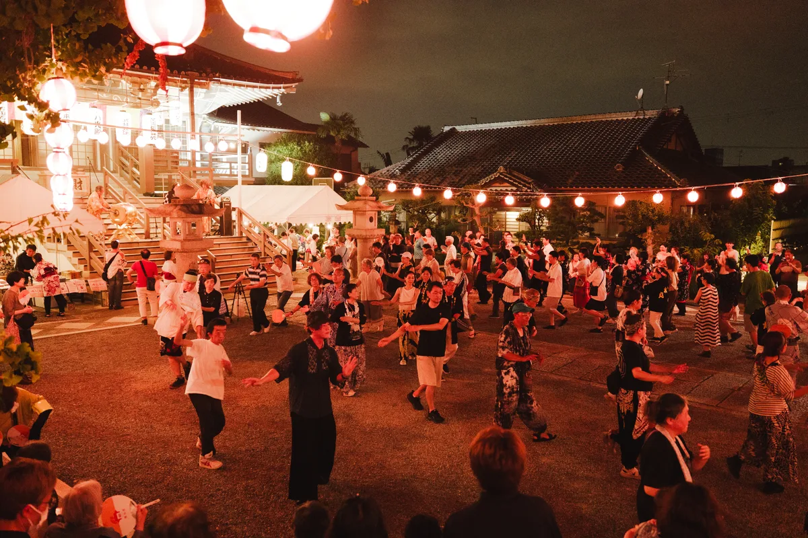
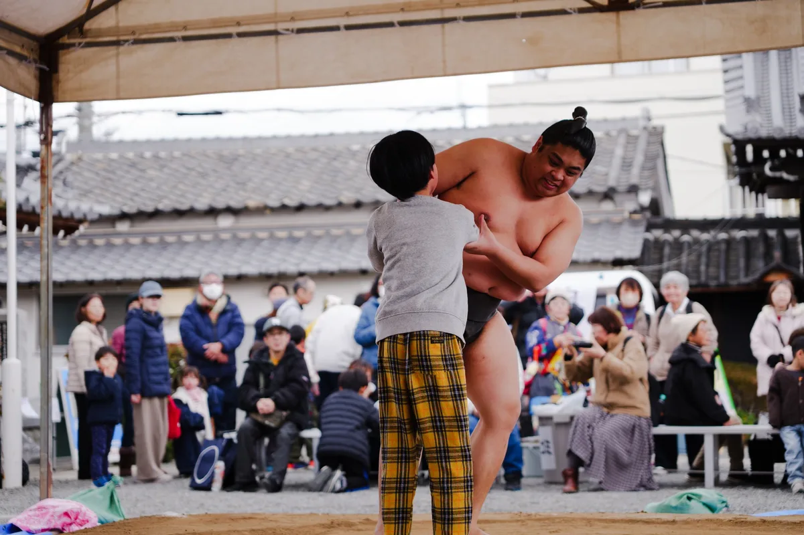
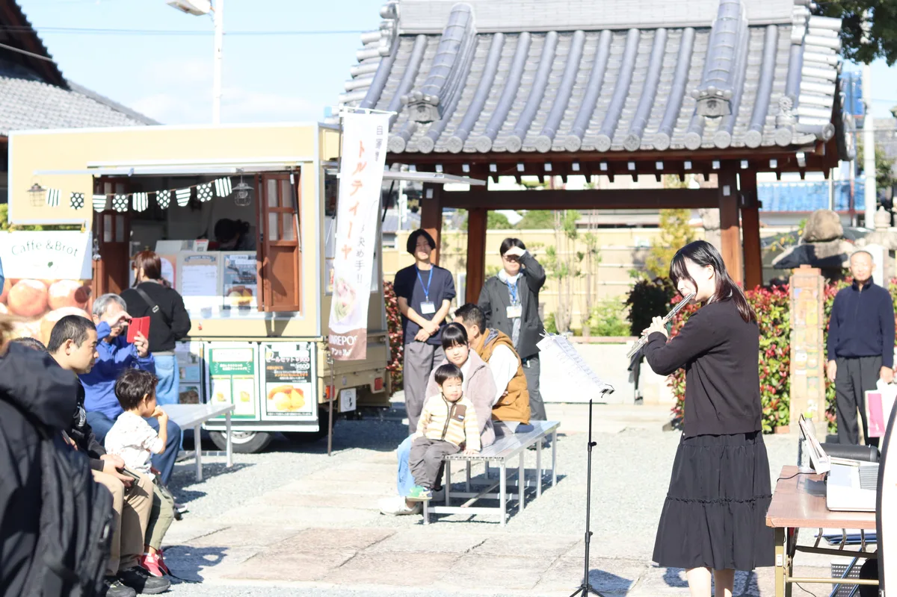
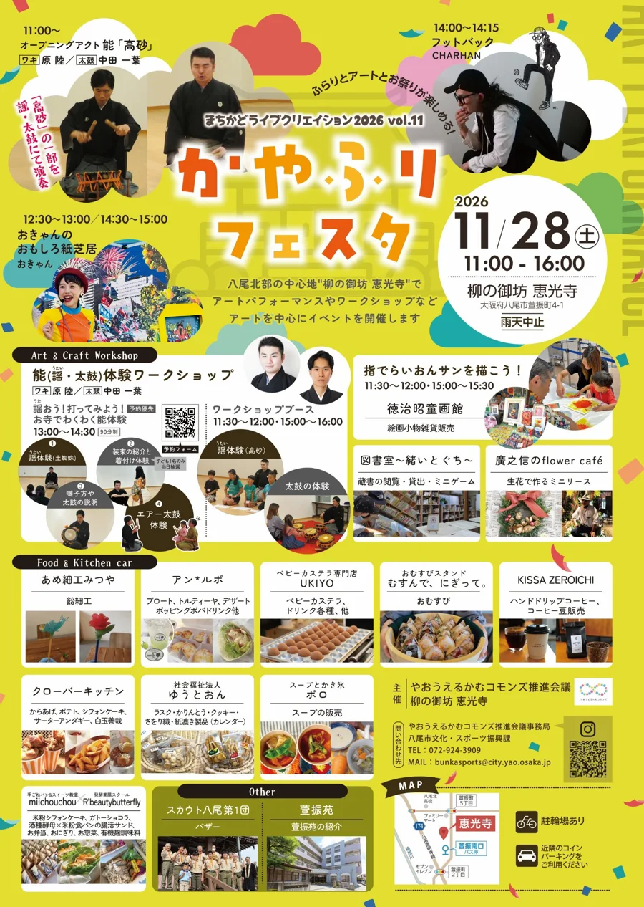
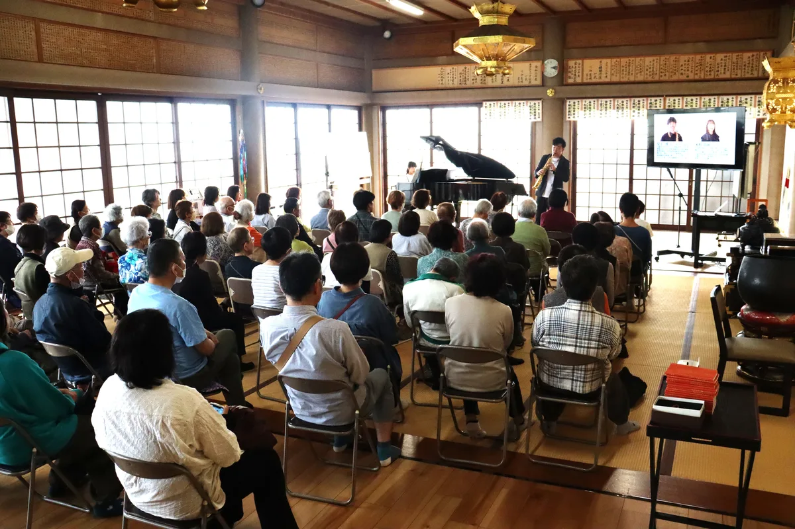

地域とともに
地域とともに
境内いっぱいに、まちのみなさんの笑顔が集まる行事です。どなたでもお越しください。
まちに開かれたお寺として
恵光寺では、法要や集まりのほかに、地域のみなさんと一緒に楽しむ行事をひらいています。お寺にはじめて来られる方も、お子さん連れの方も、どうぞ気軽にお越しください。
「慧灯大師盆おどり」

毎年、海の日の夜に境内でひらく盆おどりです。提灯のあかりの下、河内音頭にあわせて、子どもから大人まで輪になって踊ります。
- 日時
- 毎年 海の日の夜（2027年は7月19日（月・祝）19:00〜21:15・第22回）
- 場所
- 境内
- 河内家菊水丸さん
- 19:45ごろから
- 費用
- 無料
- 駐車場
- 当日は境内に停められません
「交流ちゃんこ会」

毎年恒例。お相撲さんと子どもたちの取組や、みんなで囲むちゃんこで、地域に元気を届けます。
- 日時
- 毎年3月ごろ（2027年は3月6日（土）11:00〜14:00）
- 場所
- 境内
- 費用
- 無料（ちゃんこは一杯400円）
- 朝稽古
- 原則として、恵光寺のご門徒の方に限らせていただいています
- 駐車場
- 当日は境内に停められません
「かやふりフェスタ」

ふらりと、アートとお祭りが楽しめる地域のお祭りです。境内で、能や紙芝居などのアートパフォーマンス、ワークショップ、キッチンカーやお店が並びます。ギャラリーやホールではない“まちかど”で、アートと出会える1日です。
- 日時
- 毎年秋（2026年は11月28日（土）11:00〜16:00）
- 場所
- 境内・本堂
- 費用
- 入場無料
- ご注意
- ワークショップの一部は予約優先です。雨天中止
- 駐車場
- 当日は境内に停められません。近隣のコインパーキングをご利用ください（駐輪場はあります）
- 主催
- やおうえるかむコモンズ推進会議、柳の御坊 恵光寺
- お問い合わせ
- やおうえるかむコモンズ推進会議事務局（八尾市文化・スポーツ振興課）
072-924-3909
2026年のチラシ（画像を押すと大きく表示されます）

「ほっとひといき本堂コンサート」

本堂に上がっていただき、音楽を聴きながら、ほっとひといきしていただくコンサートです。
- 日時
- 年3回
- 場所
- 本堂
- 費用
- 無料
- 駐車場
- 境内の駐車場をご利用いただけます
よくあるご質問
Q. どうやって行けばいいですか？
A. 近鉄八尾駅から、近鉄バスで「萱振南口」下車すぐです。タクシーなら駅から約10分です。くわしくはアクセスをご覧ください。
Q. 駐車場はありますか？
A. 盆おどり・交流ちゃんこ会・かやふりフェスタの日は、境内に車を停めることができません。公共交通機関や近隣のコインパーキングをご利用ください。本堂コンサートの日は、境内の駐車場をご利用いただけます。
Q. 河内家菊水丸さんは何時から歌いますか？
A. 盆おどりでは、19:45ごろからの予定です。
Q. 力士の朝稽古を見に行ってもいいですか？
A. 朝稽古の見学は、原則として恵光寺のご門徒の方に限らせていただいています。ちゃんこ会当日は、どなたでもお越しください。
Q. だれでも参加できますか？
A. はい、どなたでも参加できます。費用は無料です（ちゃんこ会のちゃんこは一杯400円です）。
ほかにも、わからないことはお気軽にお電話ください。かやふりフェスタのことは、事務局（072-924-3909）でもお答えしています。
電話で問い合わせる（090-3949-6834）